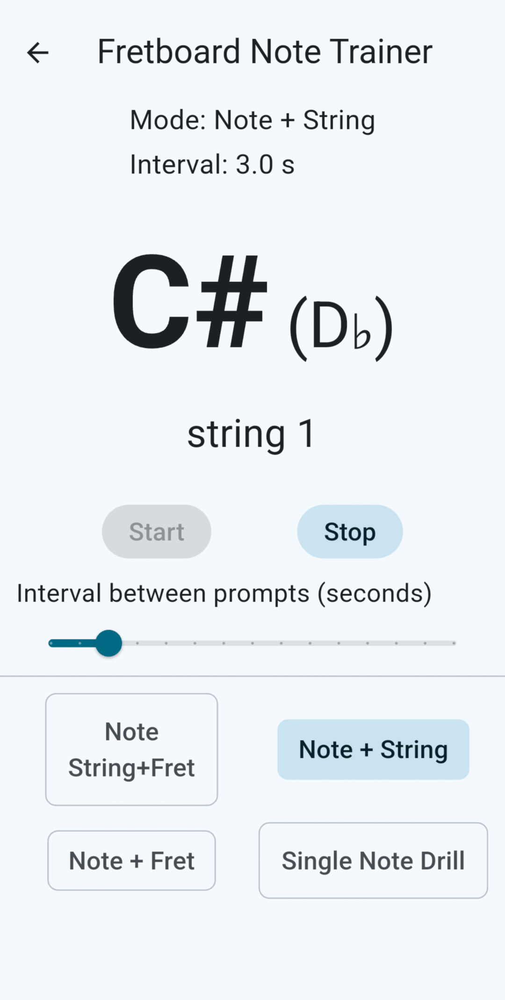

What this app helps you practise
- Recognising note names across the fretboard
- Faster note location recall
- Clearer understanding of fretboard layout
- More confident navigation between strings and frets
How it works
- Select the note set or practice mode
- View note positions on the fretboard
- Use repetition to reinforce note-location memory
- Build recognition speed through regular use
Key features
- Structured fretboard note practice
- Simple, visual learning format
- Designed for repeatable daily use
- Supports steady, practical improvement
Who it is for
- Beginners learning the fretboard
- Players wanting faster note recognition
- Anyone building a stronger foundation for guitar playing